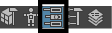
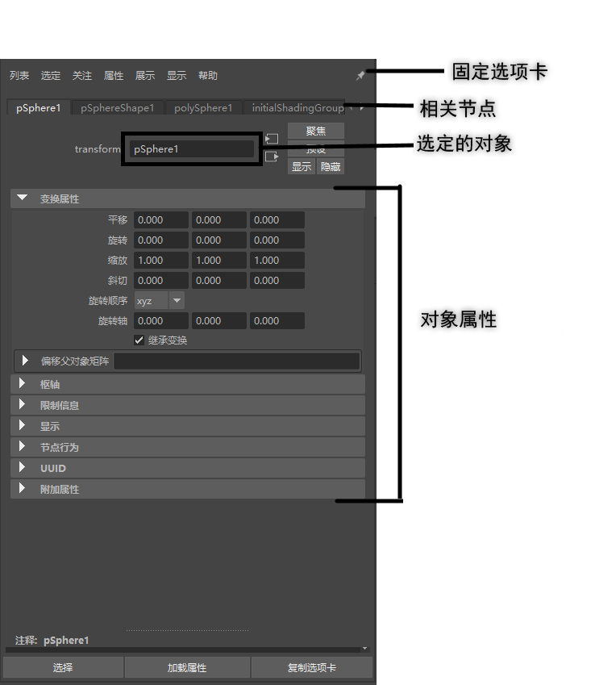
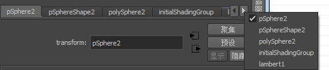

打开“属性编辑器”(Attribute Editor)
- 选择。
- 选择。
- 选择。
- 按住 Ctrl+A（如果使用默认热键集）。
注： 如果再次按 Ctrl+A，则会打开通道盒(Channel Box)。
- 单击“属性编辑器”(Attribute Editor)图标 。
“属性编辑器”(Attribute Editor)将列出选定对象上的属性。使用位于“属性编辑器”(Attribute Editor)顶部的选项卡可以选择连接到所显示节点的节点。
提示： 单击“固定选项卡”(Pin Tab)图标  可使选定选项卡保持加载状态，即使在场景中进行了其他选择也是如此。
可使选定选项卡保持加载状态，即使在场景中进行了其他选择也是如此。
可使选定选项卡保持加载状态，即使在场景中进行了其他选择也是如此。

通道盒提供了可设置关键帧的动画属性的更精简视图，而属性编辑器则提供了完整的图形控件，不仅可以用来编辑文本框，而且还可以编辑属性。请参见属性编辑器图形控件。
提示： 您可以使用“属性编辑器”(Attribute Editor)顶部节点选项卡上方的滚轮，或者在最右侧的箭头按钮上单击鼠标右键，轻松选择所需的节点：

注： 若要在属性编辑器中垂直平移，请使用滚轮或按住 Alt 键并使用鼠标中键拖动（对于 Mac，请按住 Opt 键并使用鼠标中键拖动）。若要快速平移，请按住 Ctrl 和 Alt 键并使用鼠标中键拖动（对于 Mac，请按住 Ctrl 和 Opt 键并使用鼠标中键拖动）。
“属性编辑器”(Attribute Editor)可以是单独的窗口，也可以停靠在 UI 上。请参见停靠和取消停靠窗口和面板。